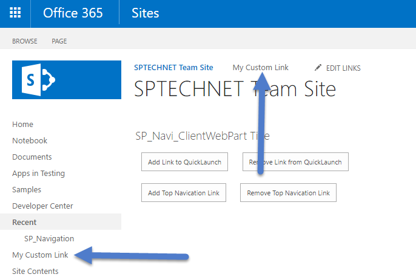

We can add or remove Quick Launch and Top Navigation link programmatically using SharePoint JavaScript Object Model (JSOM), in this below sample I have added both links for this I have used web.get_navigation().get_topNavigationBar() and web.get_navigation().get_quickLaunch(). You can find the full source code download link in this page,

Solution compatibility
This sample is tested with SharePoint Online
This sample also compatible with SharePoint 2013 and SharePoint 2016
To Modify and deploy this solution
Open visual studio 2015
On the file menu select Open -> Project (Ctrl + Shift + o)
In the Open Project window navigate the directory and select solution file (.sln)
Open solution explorer windows and select project solution and click (F4) to open project properties
Change the site URL property on the property window
Edit the code if required and click play button or (F5) in visual studio
Code Flow
I have added four buttons for add and remove both Quick Launch and Top Navigation links, buttons call respective function for do operation. in the page load I got the web object and utilized in button events
After Add or Remove links we have refresh the page for see the changes, in below i have shared both HTML and JavaScript. you can also download complete project.
'use strict';
var context;
var web;
context = SP.ClientContext.get_current();
var hostweburl;
var appweburl;
var appContextSite;
// This code runs when the DOM is ready and creates a context object which is needed to use the SharePoint object model
$(document).ready(function () {
getUrl();
});
// This function get the URL informations
function getUrl() {
hostweburl = getQueryStringParameter("SPHostUrl");
appweburl = getQueryStringParameter("SPAppWebUrl");
hostweburl = decodeURIComponent(hostweburl);
appweburl = decodeURIComponent(appweburl).toString().replace("#", "");
var scriptbase = hostweburl + "/_layouts/15/";
$.getScript(scriptbase + "SP.RequestExecutor.js", execOperation);
}
// This function get list data from SharePoint
function execOperation() {
var factory = new SP.ProxyWebRequestExecutorFactory(appweburl);
context.set_webRequestExecutorFactory(factory);
appContextSite = new SP.AppContextSite(context, hostweburl);
web = appContextSite.get_web();
context.load(web);
context.executeQueryAsync(onGetWebSuccess, onFail);
}
// This function is executed if the above call is successful
function onGetWebSuccess() {
console.log('Hello ' + web.get_title());
}
// This function is executed if the above call fails
function onFail(sender, args) {
console.log('Failed. Error:' + args.get_message());
}
//for adding new link to Quick Launch
function AddQuickLaunchLink() {
var ql = web.get_navigation().get_quickLaunch();
var nnci = new SP.NavigationNodeCreationInformation();
nnci.set_title('My Custom Link');
nnci.set_url('/_layouts/settings.aspx');
nnci.set_asLastNode(true);
ql.add(nnci);
context.load(ql);
context.executeQueryAsync(
function () {
$('#lblmessage').append("QuickLaunch link added successfully...");
}, onFail);
}
//adding new link to Top Navigation
function AddTopNavicationLink() {
var TopNav = web.get_navigation().get_topNavigationBar();
var nnci = new SP.NavigationNodeCreationInformation();
nnci.set_title('My Custom Link');
nnci.set_url('/_layouts/settings.aspx');
nnci.set_asLastNode(true);
TopNav.add(nnci);
context.load(TopNav);
context.executeQueryAsync(
function () {
$('#lblmessage').append("Top Navigation link added successfully...");
console.log("TopNav Added");
}, onFail);
}
//Removing new link to Quick Launch
function RemoreQuickLaunchLink() {
var ql = web.get_navigation().get_quickLaunch();
context.load(ql);
context.executeQueryAsync(
function () {
var e = ql.getEnumerator();
var notFound = true;
while (notFound && e.moveNext()) {
var node = e.get_current();
if (node.get_title() === "My Custom Link") {
node.deleteObject();
notFound = false;
}
}
context.executeQueryAsync(
function () {
$('#lblmessage').append("QuickLaunch link removed successfully...");
console.log("QuickLaunch link removed");
},
onFail);
},
onFail);
}
//removing new link to Top Navigation
function RemoveTopNavicationLink() {
var tn = web.get_navigation().get_topNavigationBar();
context.load(tn);
context.executeQueryAsync(
function () {
var e = tn.getEnumerator();
var notFound = true;
while (notFound && e.moveNext()) {
var node = e.get_current();
if (node.get_title() === "My Custom Link") {
node.deleteObject();
notFound = false;
}
}
context.executeQueryAsync(
function () {
$('#lblmessage').append("Top Navigation link removed successfully...");
console.log("TopNav link removed");
},
onFail);
},
onFail);
}
//This function split the url and trim the App and Host web URLs
function getQueryStringParameter(paramToRetrieve) {
var params =
document.URL.split("?")[1].split("&");
for (var i = 0; i < params.length; i = i + 1) {
var singleParam = params[i].split("=");
if (singleParam[0] == paramToRetrieve)
return singleParam[1];
}
}
<%@ Page Language="C#" Inherits="Microsoft.SharePoint.WebPartPages.WebPartPage, Microsoft.SharePoint, Version=15.0.0.0, Culture=neutral, PublicKeyToken=71e9bce111e9429c" %> <%@ Register TagPrefix="SharePoint" Namespace="Microsoft.SharePoint.WebControls" Assembly="Microsoft.SharePoint, Version=15.0.0.0, Culture=neutral, PublicKeyToken=71e9bce111e9429c" %> <%@ Register TagPrefix="Utilities" Namespace="Microsoft.SharePoint.Utilities" Assembly="Microsoft.SharePoint, Version=15.0.0.0, Culture=neutral, PublicKeyToken=71e9bce111e9429c" %> <%@ Register TagPrefix="WebPartPages" Namespace="Microsoft.SharePoint.WebPartPages" Assembly="Microsoft.SharePoint, Version=15.0.0.0, Culture=neutral, PublicKeyToken=71e9bce111e9429c" %> <WebPartPages:AllowFraming ID="AllowFraming" runat="server" /> <html> <head> <title></title> <script type="text/javascript" src="../Scripts/jquery-1.9.1.min.js"></script> <script type="text/javascript" src="/_layouts/1033/init.js"></script> <script type="text/javascript" src="/_layouts/15/MicrosoftAjax.js"></script> <script type="text/javascript" src="/_layouts/15/sp.runtime.js"></script> <script type="text/javascript" src="/_layouts/15/sp.js"></script> <script type="text/javascript" src="../Scripts/App.js"></script> <link href="../Content/bootstrap.min.css" rel="stylesheet" /> <script type="text/javascript"> // Set the style of the client web part page to be consistent with the host web. (function () { 'use strict'; var hostUrl = ''; if (document.URL.indexOf('?') != -1) { var params = document.URL.split('?')[1].split('&'); for (var i = 0; i < params.length; i++) { var p = decodeURIComponent(params[i]); if (/^SPHostUrl=/i.test(p)) { hostUrl = p.split('=')[1]; document.write('<link rel="stylesheet" href="' + hostUrl + '/_layouts/15/defaultcss.ashx" />'); break; } } } if (hostUrl == '') { document.write('<link rel="stylesheet" href="/_layouts/15/1033/styles/themable/corev15.css" />'); } })(); </script> </head> <body> <div style="width: 450px"> <input type="button" id="btnQLAdd" onclick="AddQuickLaunchLink()" value="Add Link to QuickLaunch" /> <input type="button" id="btnQLRemove" onclick="RemoreQuickLaunchLink()" value="Remove Link from QuickLaunch" /> <input type="button" id="btnTopAdd" onclick="AddTopNavicationLink()" value="Add Top Navication Link" /> <input type="button" id="btnTopRemove" onclick="RemoveTopNavicationLink()" value="Remove Top Navication Link" /> </div> <p id="lblmessage" style="color: green"></p> </body> </html>
'use strict'; var context; var web; context = SP.ClientContext.get_current(); var hostweburl; var appweburl; var appContextSite; // This code runs when the DOM is ready and creates a context object which is needed to use the SharePoint object model $(document).ready(function () { getUrl(); }); // This function get the URL informations function getUrl() { hostweburl = getQueryStringParameter("SPHostUrl"); appweburl = getQueryStringParameter("SPAppWebUrl"); hostweburl = decodeURIComponent(hostweburl); appweburl = decodeURIComponent(appweburl).toString().replace("#", ""); var scriptbase = hostweburl + "/_layouts/15/"; $.getScript(scriptbase + "SP.RequestExecutor.js", execOperation); } // This function get list data from SharePoint function execOperation() { var factory = new SP.ProxyWebRequestExecutorFactory(appweburl); context.set_webRequestExecutorFactory(factory); appContextSite = new SP.AppContextSite(context, hostweburl); web = appContextSite.get_web(); context.load(web); context.executeQueryAsync(onGetWebSuccess, onFail); } // This function is executed if the above call is successful function onGetWebSuccess() { console.log('Hello ' + web.get_title()); } // This function is executed if the above call fails function onFail(sender, args) { console.log('Failed. Error:' + args.get_message()); } //for adding new link to Quick Launch function AddQuickLaunchLink() { var ql = web.get_navigation().get_quickLaunch(); var nnci = new SP.NavigationNodeCreationInformation(); nnci.set_title('My Custom Link'); nnci.set_url('/_layouts/settings.aspx'); nnci.set_asLastNode(true); ql.add(nnci); context.load(ql); context.executeQueryAsync( function () { $('#lblmessage').append("QuickLaunch link added successfully..."); }, onFail); } //adding new link to Top Navigation function AddTopNavicationLink() { var TopNav = web.get_navigation().get_topNavigationBar(); var nnci = new SP.NavigationNodeCreationInformation(); nnci.set_title('My Custom Link'); nnci.set_url('/_layouts/settings.aspx'); nnci.set_asLastNode(true); TopNav.add(nnci); context.load(TopNav); context.executeQueryAsync( function () { $('#lblmessage').append("Top Navigation link added successfully..."); console.log("TopNav Added"); }, onFail); } //Removing new link to Quick Launch function RemoreQuickLaunchLink() { var ql = web.get_navigation().get_quickLaunch(); context.load(ql); context.executeQueryAsync( function () { var e = ql.getEnumerator(); var notFound = true; while (notFound && e.moveNext()) { var node = e.get_current(); if (node.get_title() === "My Custom Link") { node.deleteObject(); notFound = false; } } context.executeQueryAsync( function () { $('#lblmessage').append("QuickLaunch link removed successfully..."); console.log("QuickLaunch link removed"); }, onFail); }, onFail); } //removing new link to Top Navigation function RemoveTopNavicationLink() { var tn = web.get_navigation().get_topNavigationBar(); context.load(tn); context.executeQueryAsync( function () { var e = tn.getEnumerator(); var notFound = true; while (notFound && e.moveNext()) { var node = e.get_current(); if (node.get_title() === "My Custom Link") { node.deleteObject(); notFound = false; } } context.executeQueryAsync( function () { $('#lblmessage').append("Top Navigation link removed successfully..."); console.log("TopNav link removed"); }, onFail); }, onFail); } //This function split the url and trim the App and Host web URLs function getQueryStringParameter(paramToRetrieve) { var params = document.URL.split("?")[1].split("&"); for (var i = 0; i < params.length; i = i + 1) { var singleParam = params[i].split("="); if (singleParam[0] == paramToRetrieve) return singleParam[1]; } }
*****************************************************************************************************
Hope you find this sample helpful, check out my other samples too.
Give five stars if you wish to appreciate my work.
Facebook page URL: https://code.msdn.microsoft.com/Quick-Launch-and-Top-0dbcba8b/https://www.facebook.com/sptechnet2016/
Blog URL: https://code.msdn.microsoft.com/Quick-Launch-and-Top-0dbcba8b/https://sptechnet.wordpress.com/
*****************************************************************************************************